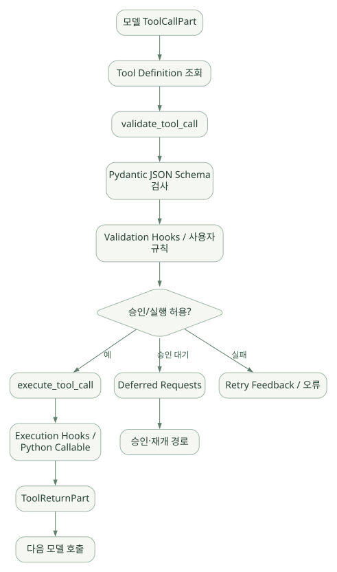

구현과 운영 / 단원 08
준비·모델·도구·출력의 실제 파일 연결하기
Agent.iter와 Graph 상태, ToolManager의 검증·실행 분리
먼저 연결해 보기
공개 Agent API에서 Run 준비로 들어간 뒤, Graph의 세 노드와 ToolManager를 따라 읽습니다. 실제 함수명과 파일 경로를 단서로 삼되 내부 메서드를 안정된 공개 API로 사용하면 안 됩니다.
Tool 검증과 실행, Output Tool과 일반 Function Tool, Tool Retry와 Output Retry의 경계를 확인하세요. 의사코드의 가상 함수명은 역할을 설명하기 위한 것이며 복사해 실행할 실제 라이브러리 호출이 아닙니다.
읽는 관점사용량·재시도·호출 ID·종료 유형과 함께, 실행 순서가 외부 부작용에 미치는 영향을 추적하세요.
18. 코드베이스 구조와 진입점#
18.1 소스코드 지형도#
PydanticAI 공식 저장소에서 Agent 실행과 관련된 핵심 파일은 다음과 같다. [C01]~[C07]
pydantic-ai/
├─ pydantic_ai_slim/
│ └─ pydantic_ai/
│ ├─ agent/
│ │ ├─ __init__.py # Agent 생성, run / iter, 준비와 수명주기
│ │ └─ abstract.py # Agent 추상 API
│ ├─ _agent_graph.py # Agent Loop / 세 노드 / 상태 / 모델 요청
│ ├─ _tool_execution.py # 다중 Tool Call 처리, 종료 전략, 병렬 실행
│ ├─ tool_manager.py # Tool 등록/정의 조회, 인자 검증, 실행 및 Retry
│ ├─ tools.py # 공개 Tool/Runtime 타입
│ ├─ toolsets/ # Toolset 인터페이스 및 조합
│ ├─ output.py # 공개 출력 API/OutputSpec
│ ├─ _output.py # OutputSchema / OutputProcessor / Validator
│ ├─ messages.py # ModelRequest/Response/Part 정의
│ ├─ _run_context.py # RunContext 및 실행 문맥
│ ├─ models/ # Model 추상화와 Provider 구현
│ ├─ capabilities/ # 확장 기능과 수명주기 Hooks
│ ├─ _history_processor.py # History 처리 API
│ ├─ _system_prompt.py # 지시문·시스템 메시지 처리
│ ├─ usage.py # Usage/UsageLimits
│ ├─ conversation.py # Conversation 관련 API
│ └─ _instrumentation.py # 관측/트레이싱 기반 로직
├─ pydantic_graph/ # 범용 실행 Graph 구성요소
├─ pydantic_evals/ # 평가 관련 패키지
├─ pydantic_ai_harness/ 또는 관련 Harness 패키지 코드
├─ docs/ # 공식 문서 소스
└─ examples/ ... # 사용 예제주의: 위 트리는 각 컴포넌트의 논리적 위치를 정리한 것이다. 하위 패키지의 정확한 배포명·디렉터리 구조는 릴리스별로 변경될 수 있으며 pydantic_ai_harness 경로가 단일 루트에 항상 존재한다고 가정하지 않는다. 주요 실행 파일 4개는 실제 v2.61.0 링크를 확인했다. [C01][C02][C03][C04]
18.2 가장 먼저 읽을 파일 5개#
agent/__init__.py: 외부 Agent API가 내부 Graph로 들어가는 연결._agent_graph.py: 모델 호출/도구 분기/최종 종료.tool_manager.py: Tool 인자 검증과 실행 경로._tool_execution.py: 여러 Tool Call 처리와 순서/병렬성._output.py: OutputSchema와 결과 검증.
19. Agent.iter() → Run 준비 → Graph 실행 추적#
19.1 진입점 확인 [코드]#
agent/__init__.py에서 iter()는 @asynccontextmanager 기반으로 정의되어 있고, 실행 전에 _prepare_run(...) 경로를 거친다. _prepare_run()은 실행별 입력/모델/출력/History/Capability 등을 준비하는 데 핵심적인 지점이다. 준비된 Run이 실제 graph를 열고 실행하는 별도의 수명주기를 갖는다. [C01]
주목할 실제 함수와 라인 범위(원본 소스의 행 번호, 태그 고정):
| 함수·클래스 | 위치 | 역할 |
|---|---|---|
Agent.iter |
agent/__init__.py 약 1368행 |
하위 Agent Graph 반복 접근용 Context Manager |
Agent._prepare_run |
같은 파일 약 1526행 | 실행별 Model, Output, History, Capability 준비 |
_PreparedAgentRun.open |
같은 파일 약 4480행 | 실행 자원/Capability 수명주기 진입 및 정리 |
GraphAgentState |
_agent_graph.py 약 353행 |
메시지·Usage·Retry·Run Step 보유 |
UserPromptNode |
_agent_graph.py 약 609행 |
사용자 메시지와 Instructions 준비 |
ModelRequestNode |
_agent_graph.py 약 1316행 |
모델 요청 준비/호출 |
CallToolsNode |
_agent_graph.py 약 2179행 |
모델 응답 처리, Tool·Output·재호출·종료 결정 |
핵심: Agent 클래스는 Agent가 무슨 일을 할지를 기술하고, Graph가 한 번의 실행에서 어떻게 진행되는지를 맡는다. 이는 '사용자-facing 정의 API'와 '실행 루프'를 분리한 설계다. [C01][C02]
19.2 한눈에 보는 내부 Call Graph [단순화 의사코드]#
# 실제 API 이름/계층을 바탕으로 한 교육용 축약본. 실행용 아님.
async def conceptual_agent_run(agent, user_prompt, deps):
prepared = await agent._prepare_run(user_prompt, deps=deps, ...)
async with prepared.open() as run:
# 내부에서 pydantic-graph 기반 노드 순회
while not run.complete:
current_node = await run.advance()
if current_node.type == 'user_prompt':
prepare_messages_and_instructions()
elif current_node.type == 'model_request':
response = await call_selected_model()
elif current_node.type == 'call_tools':
next_node_or_end = await handle_output_and_tool_calls(response)
return run.result위 코드에 등장하는 run.advance(), prepare_messages_and_instructions() 등은 실제 라이브러리의 호출 API가 아니다. 역할을 전달하기 위한 함수명으로 만든 의사코드다. 실제 사용자는 agent.run() 또는 async with agent.iter(...)를 사용한다. [S03]
19.3 GraphAgentState의 주요 필드 [코드]#
_agent_graph.py의 GraphAgentState에는 다음과 같은 정보가 존재한다.
message_history: 지금까지 모델과 교환한 메시지들.usage: 토큰·요청 등의 사용량.output_retries_used: 출력 관련 재시도 사용량.run_step: 현재 반복 단계.run_id: 실행을 구분하는 식별자.- 추가로 실행 재개/메시지 처리/동적 도구 등을 위한 상태를 가진다. [C02]
설계 시사점: 실제 Agent를 디버깅하려면 '현재 메시지'만 보지 말고 (1) 단계 번호, (2) 사용량, (3) 재시도 소비, (4) 도구 호출/결과 대응, (5) 종료 유형을 함께 기록해야 한다.
20. _agent_graph.py: 세 가지 핵심 노드#
20.1 UserPromptNode — 입력 구성#
책임: 새로운 사용자 입력, 기존 메시지 History, System Prompt/Instructions, 미완료 Tool 호출, Deferred Tool 결과 등을 반영해 다음 단계로 이어준다. [C02]
이 단계에서 확인할 질문:
- 이전 메시지가 있을 때 동적 지시문을 어떻게 다시 평가하는가?
- 이미 처리되지 않은 Tool Call이 있는 상태에서 새 사용자 질문이 들어오면 어떻게 반응하는가?
- 새로운 Conversation인지 기존 Conversation 재개인지 무엇으로 판별하는가?
- 승인 결과(Deferred Results)는 어느 지점에서 반영되는가?
중요: '유저 입력 수신 → 무조건 즉시 모델 호출'이 아니다. 이미 미완료된 작업, Tool 결과 또는 중단된 모델 응답이 있으면 이를 먼저 처리/복구하는 분기가 존재한다. [C02]
20.2 ModelRequestNode — Model API 호출#
책임: 모델에 전달할 요청 파라미터와 History를 준비하고 Model 객체를 호출한다. _prepare_request_parameters 등에서 Tool 정의 및 Output Schema와 관련된 설정을 결합한다. [C02]
[현재 Graph State]
→ Model Request 준비
→ Instruction + Message History 선택
→ Function Tool Schema / Output Schema 구성
→ Model Request Parameters 생성
→ Provider Model 호출
→ ModelResponse 수신
→ CallToolsNode로 이동여기서 중요한 개념은 모델이 Tool 목록을 실제로 본다는 점이다. Tool Python 코드가 모델에 통째로 전송되는 것이 아니라, 적절한 도구 메타데이터·스키마가 모델 요청 파라미터에 구성된다. 실행 시 Tool 본체는 Python 호스트에 남아 있는 것이 일반적이다.
20.3 CallToolsNode — Agent의 핵심 분기점#
CallToolsNode는 모델 응답을 읽어 최종 출력인지, Function Tool 호출인지, 오류·재시도인지 판단한다. 적절한 다음 노드를 반환하거나 그래프 종료를 지시한다. 여러 도구 실행 처리는 _tool_execution.py의 process_tool_calls(...)와 연결된다. [C02][C04]
예시:
ModelResponse:
ToolCallPart(name='find_alarm', args={'equip_id': 'EQ-17'})
↓
CallToolsNode
↓
Function Tool: 검증 → 실행 → ToolReturnPart
↓
다음 ModelRequestNode
ModelResponse:
Output Tool 또는 Native Structured Output
↓
CallToolsNode
↓
OutputSchema + Validators
↓
최종 결과 또는 Retry20.4 중요한 실패 처리#
GraphAgentState.consume_output_retry()는 output 재시도 예산을 소모하며 한도를 넘으면 오류를 발생시키는 경로다. Tool별 Retry 예산과 Output Retry 예산은 구분해 읽어야 한다. [C02][C03]
사례: 모델이 risk_score=1.7을 생성한다 → Pydantic Field 검증이 실패할 수 있다 → 프레임워크가 수정 피드백을 모델에 반환한다 → 모델이 재시도한다 → 설정한 출력 재시도 한도를 초과하면 계속 답을 만들어내기보다 실패로 처리한다.
이런 구조는 반도체 분석 결과를 '무조건 성공한 것처럼 출력'하는 설계보다 낫지만, 실데이터 없이 정확한 이상 원인을 찾는 능력까지 제공하지는 않는다.
21. ToolManager와 _tool_execution.py: 인자 검증부터 실제 실행까지#
21.1 ToolManager의 실제 책임 [코드]#
공식 코드 tool_manager.py에서 ToolManager는 해당 Step의 Toolset 정의를 관리하고 Tool 호출을 검증·실행하며 Retry를 처리한다. [C03]
주요 함수:
| 메서드 | 코드 위치(대략) | 의미 |
|---|---|---|
ToolManager.for_run_step |
378행 | 다음 실행 Step에서 도구 정의·재시도 상태 준비 |
_validate_tool_args |
543행 | Pydantic Schema 기반 인자 검증 |
_run_validate_hooks |
584행 | 인자 검증 Hook 개입 |
_run_execute_hooks |
657행 | Tool 실행을 Capability Hook으로 감쌈 |
validate_tool_call |
841행 | 실제 실행 없이 Tool 호출 인자 검증 |
execute_tool_call |
920행 | 검증한 Tool 호출을 실행 |
validate_output_tool_call |
959행 | Output Tool 검증 경로 |
execute_output_tool_call |
1023행 | Output Tool 처리 경로 |
handle_call |
1224행 | 단일 호출의 통합 검증/실행/지연 처리 |
resolve_deferred_tool_calls |
1325행 | 보류 Tool 호출을 처리할 핸들러 호출 |
행 번호는 v2.61.0 태그 원본 기준이다. 코드 리팩터링으로 변할 수 있다. [C03]
21.2 2단계 검증/실행 구조#
넓은 도식은 가로로 이동하며 읽을 수 있습니다. 도식 크게 보기 ↗

원문에 수록된 학습용 도식입니다. 노드·화살표·분기 라벨을 보존해 다시 배치했습니다. 세부 조건과 예시·구현의 구분은 앞뒤 본문을 함께 읽으세요.
도식 원문 보기 (Mermaid)
flowchart TB
T[모델 ToolCallPart] --> L[Tool Definition 조회]
L --> V[validate_tool_call]
V --> JSON[Pydantic JSON Schema 검사]
JSON --> HOOK[Validation Hooks / 사용자 규칙]
HOOK --> A{승인/실행 허용?}
A -->|예| E[execute_tool_call]
E --> EXEC[Execution Hooks / Python Callable]
EXEC --> R[ToolReturnPart]
A -->|승인 대기| D[Deferred Requests]
A -->|실패| F[Retry Feedback / 오류]
R --> NEXT[다음 모델 호출]
D --> RESUME[승인·재개 경로]위 도식은 논리적 흐름을 단순화한 것으로, 실제 Hook/Approval 검사 순서는 Tool 유형과 Deferred 처리 방식에 따라 다르다. 코드에서 validate_tool_call과 execute_tool_call이 별도 메서드로 존재한다는 점이 핵심이다. [C03]
21.3 Tool 검증이 보안을 완성하지는 않는다#
Tool 인자의 타입이 equipment_id: str이라는 것만 확인하면 equipment_id='OTHER_FAB_SECRET' 같은 값도 정상 문자열이다. 서버의 권한 확인이 없다면 타입 검증은 무력하다.
권장 흐름: 입력 스키마 → 도구별 인가 → 테넌트 필터 → 읽기 전용 DB 세션 → 쿼리 파라미터 바인딩 → 결과 크기 제한 → 민감정보 마스킹 → 감사 로그.
21.4 여러 Tool Call 동시 실행#
_tool_execution.py는 한 응답에 여러 Tool Call이 있는 경우 출력 전략 및 도구 유형에 따라 실행 순서를 관리한다. process_tool_calls와 _GracefulProcessor 등의 구현이 있다. [C04]
- 단순 병렬 호출은 읽기 전용 계산/검색에서 유용할 수 있다.
- 쓰기·삭제·결재와 같은 부작용 있는 Tool은 병렬 실행 시 순서/중복 문제가 생긴다.
- '두 가지 함수가 모두 실행되었으니 그 결과가 한 트랜잭션으로 원자적이었다'고 가정하지 않는다.
- 멱등성 키, 트랜잭션, 재시도/취소 시 부작용 보상 로직은 백엔드 설계에서 따로 다뤄야 한다.
21.5 early / graceful / exhaustive 구현 추적#
실제 _tool_execution.py에는 전략별 Processor가 있으며 _GracefulProcessor는 Tool 호출 등장 순서를 바탕으로 Output Tool 앞에 놓인 Function Tool 묶음을 처리하는 경로를 구현한다. [C04]
학습 실험 제안(실행은 후속 단계):
function_a와final_result를 같은 응답에서 요청하는 FakeModel 구성.end_strategy세 값을 바꾸어 실행 경로 기록.- Function Tool 실행 횟수·순서·재시도/예외 처리를 비교.
sequential=True를 적용한 Tool과 병렬 Tool의 차이 측정.- 모델의 일반 텍스트 출력과 구조화 Output Tool의 종료 조건 차이를 관찰.
22. _output.py, Capabilities, Provider 경로 코드 분석#
22.1 OutputSchema는 어떻게 작동하는가?#
_output.py에는 OutputSchema, OutputToolset, Output Processor 계열 구현이 있다. OutputSchema는 출력 허용 범위, Output Tool 정의·프로세서, 모드 등 결과 스키마 관련 상태를 담는다. [C05]
실제 처리 개념:
개발자 output_type 정의
↓
Output Schema / Processor 생성
↓
선택된 모델에 결과 형식 전달
↓
ModelResponse 수신 (Tool / Native / Text 형태)
↓
값 파싱 및 Pydantic Validation
↓
사용자 Output Validator / Capability Hook
↓
성공 → RunResult, 실패 → Retry / ExceptionOutput Tool도 Tool이지만 일반 Function Tool과는 다르게 검증/후처리 Hook 경로가 구분된다는 점이 핵심이다. tool_manager.py에도 validate_output_tool_call과 execute_output_tool_call이 별도 존재한다. [C03][C05]
22.2 Capabilities/abstract.py의 설계#
AbstractCapability 계열은 공통 Hook 함수와 여러 기능의 합성을 지원하는 추상 계층이다. Core Agent는 여기에 해당하는 동작을 호출하여 실행 중간에 개발자 정의 정책을 적용할 수 있다. [C06]
Capability 설계는 횡단 관심사(cross-cutting concerns)와 연결해 이해하면 쉽다.
- 보안: 모든 Tool 실행 전 인가 검사.
- 비용: 모델 호출 전 예산 검사.
- 품질: 모델 출력 전후 검증·감사.
- 관측: 모든 Run·Tool 호출의 지연 기록.
- 프롬프트: 조직 공통 지침 주입.
Tool 함수마다 같은 코드를 복사하는 방식보다 중앙 정책을 재사용하기 좋지만, Capability가 여러 개 겹치면 실행 순서·예외 우선순위를 더 정교하게 이해해야 한다.
22.3 Provider/Model 계층은 어떻게 분석할까?#
문서에서 특정 Provider의 모델 ID를 지정하면, Runtime은 Model 추상화를 통해 해당 모델 구현을 선택하고 Provider API로 요청을 보낸다. 지원 모델별 모델 설정·기능(Structured Output, Native Tool, Streaming, Thinking 등)은 다르다. [S06]
실제 개발 전 필수 확인 항목:
- 해당 모델이 Tool Calling을 안정적으로 지원하는가?
- Structured Output 제약을 얼마나 지원하는가?
- Native Tools가 요구하는 별도 공급자 API가 있는가?
- 모델 응답에 토큰 사용량과 Stop Reason 정보가 일관되게 오는가?
- 모델 Gateway에서 스키마·Tool 호출을 재가공하거나 누락시키지 않는가?
- Async·Streaming·Timeout·Retry 동작이 호환되는가?
모델 독립적 인터페이스 ≠ 모든 모델의 기능·품질이 완전히 동일하다는 뜻은 아니다.
22.4 기능별 코드 추적표 — 실무 복습용#
| 보고 싶은 동작 | 시작 파일 | 뒤이어 볼 대상 | 관찰할 값 |
|---|---|---|---|
| Agent 생성과 Run 준비 | agent/__init__.py |
_prepare_run, _PreparedAgentRun.open |
model, deps, history, capabilities |
| 모델 요청 파라미터 구성 | _agent_graph.py |
ModelRequestNode, _prepare_request_parameters |
instructions, messages, schemas |
| Tool 호출 분기 | _agent_graph.py |
CallToolsNode, _tool_execution.py |
ToolCallPart, output strategy |
| Tool 인자 타입 오류 | tool_manager.py |
_validate_tool_args, validate_tool_call |
args, validation exception |
| Tool 권한·승인 | tool_manager.py |
validate / execute hooks, deferred resolution | approval status, requester |
| Tool 병렬·순차 실행 | _tool_execution.py |
process_tool_calls, strategy processor |
call index, results order |
| Structured Output | _output.py |
OutputSchema, OutputProcessors |
typed result, validation result |
| Output Retry | _agent_graph.py |
GraphAgentState.consume_output_retry |
retry count, feedback, outcome |
| 대화 재사용 | messages.py, conversation.py |
Agent run/iter의 History 입력 |
conversation id, message parts |
| Capability Hook | capabilities/abstract.py |
Agent/ToolManager의 Hook 호출 | hook order, intercepted values |
| 모델/Provider | models/ |
선택한 Provider 구현 | request payload, tool schema |
22.5 실제로 코드 분석 보고서를 작성한다면#
각 코드 경로는 다음 8가지를 기록한다.
1. 공개 API 진입점: 어떤 함수 호출인가?
2. 내부 핵심 클래스: 객체의 책임은 무엇인가?
3. 실행 상태: State에 저장되는 값은 무엇인가?
4. 입력: 모델 메시지 / Tool Schema / Deps가 어디서 왔는가?
5. 분기: Tool / Output / Retry / Error에서 무엇이 다른가?
6. 예외: 어느 오류가 처리되고, 어느 오류가 상위로 전파되는가?
7. Side effects: Tool 실행으로 실제로 무엇이 변경되는가?
8. 확장 지점: 이 동작을 Hook/Capability/사용자 코드로 바꿀 수 있는가?이 형식으로 정리하면 OpenAI Agents SDK·Google ADK·Microsoft Agent Framework·Claude Agent SDK·Hermes와도 비교하기 쉽다.